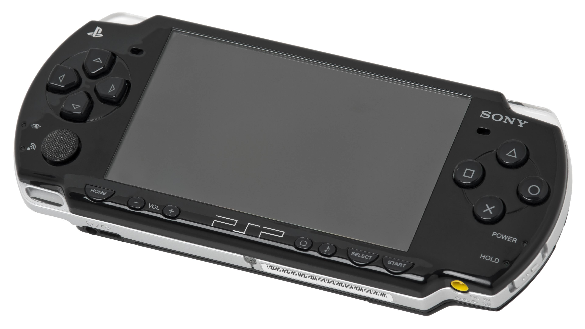

Dispositivo electrónico ligero que permite jugar videojuegos y en el que, a diferencia de una videoconsola de sobremesa, los controles, la pantalla, los altavoces y la alimentación (baterías) están integrados en la misma unidad y todo ello con un pequeño tamaño, para poder llevarla y jugar en cualquier lugar o momento
La PlayStation Portable (PSP)
La PSP es la tercera consola de la línea PlayStation (quinta contando las revisiones de las anteriores, o séptima contando las sólo lanzadas en Japón) y primera incursión de Sony en el mercado de las portátiles; fue presentada oficialmente en la compañía de Sony el 17 de octubre de 2004.

Fue lanzada al mercado el 12 de diciembre de 2004 en Japón y el 1 de septiembre de 2005 para el resto del mundo
Caracteristicas
Volver a Inicio